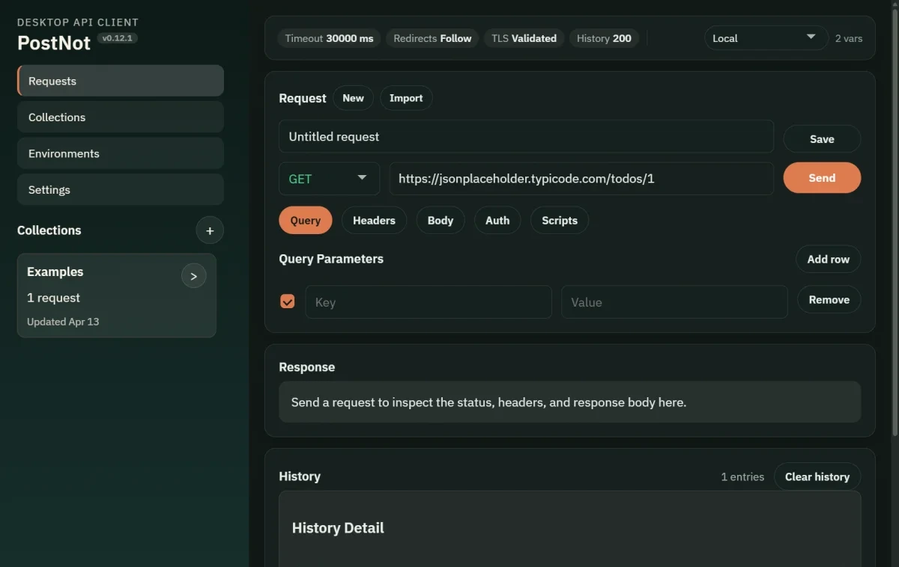
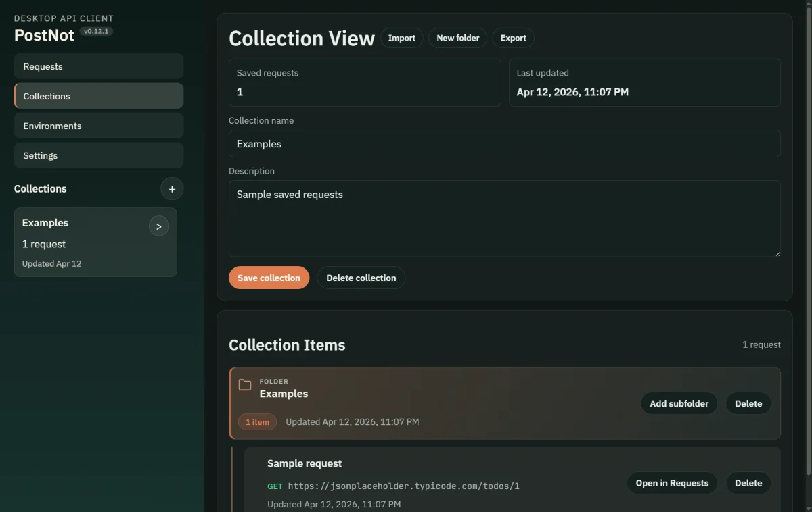
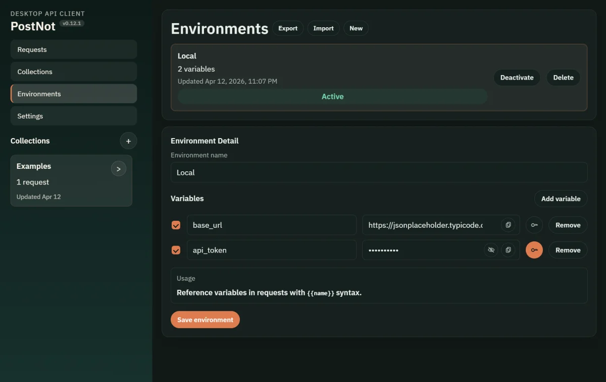
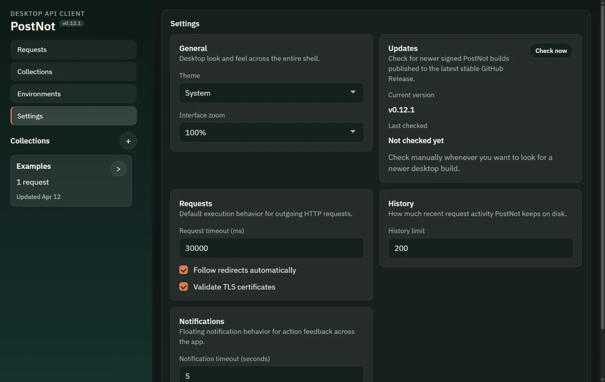

HTTP requests
Compose and send HTTP requests from a desktop-native UI.
Rust + Tauri desktop client
PostNot is a local-first API client for focused HTTP workflows: native request execution, local persistence, collections, environments, OS-backed secrets, import/export, and saved request scripting.
PostNot is a fully AI-generated software project. The repository code was produced end-to-end by AI agents.

Core workflow
PostNot keeps request editing, persistence, history, imports, and secrets close to the machine you are working on.
Compose and send HTTP requests from a desktop-native UI.
Save requests into collections and nested folders, then browse them with aligned tree guides and shared folder glyphs.
Use environments and {{variable}} substitution across requests.
Built-in values like $guid and $timestamp.
Store secret environment values in the OS credential store instead of plain SQLite.
Inspect request history locally with sensible redaction for secret-derived values.
Import from Postman or cURL and export collections and environments when needed.
Attach local files to multipart requests without leaving the app workflow.
Run inherited collection, folder, and request scripts around each send. Read the scripting docs.
Interface
A quick look at the current UI across the request editor, collections, environments, and settings surfaces.



Why PostNot
Request data and app state live on your machine.
Rust request execution and Tauri packaging instead of a browser-only shell.
Bring data in from Postman, keep working locally, and export it back out later.
Secrets stay out of SQLite and are redacted from stored history snapshots.
Storage model
Project status
The core workflow is already real and usable. Current work is focused on richer scripting, multi-request workflow decisions, additional polish, and updater channel decisions. Follow CHANGELOG.md and Releases for updates.